Mecânicas do tabuleiro
Testes rápidos sem iniciar uma partida completa.
Pronto para testes.
Jogo de tabuleiro
Escolha como você quer jogar.
Modo local
Escolha como os jogadores vão participar da partida.
Modo local • controles
O tabuleiro fica neste computador principal. Cada jogador pode usar outro dispositivo como controle.
Aguarde o servidor online iniciar. O site libera a entrada automaticamente quando a conexão estiver pronta.
Abra o endereço em qualquer dispositivo compatível e conecte-se à sala. O QR Code continua sendo a forma mais rápida.
Preparando endereço…
0 de 4
É necessário conectar pelo menos 2 jogadores. O máximo é 4.
Modo online
Crie ou entre em uma sala sincronizada. O servidor da partida fica online e sincroniza as salas automaticamente.
Preparando endereço…
0 de 4
São necessários pelo menos 2 jogadores.
Área de desenvolvimento
Atalhos para testar mecânicas antes de elas entrarem na partida normal.
Pronto para testes.
Registro inicial: Just Dance. Os arquivos finais ainda podem ser adicionados depois sem refazer a conexão dos sensores.
Mini Game • desenvolvimento
Conecte celulares e teste o fluxo completo de pontuação: julgamentos por movimento, score até 13.333, 5 estrelas, Superstar e Megastar. A comparação fina com a coreografia ainda será calibrada pelos classificadores da música.

Low / Medium / High + HUD real carregados no projeto.




O erro anterior era de 2.812 ms: o videoOffset foi subtraído de uma timeline que já começava nesse tempo. Para Rain Over Me, a calibração confirmada agora é -1725 ms e esse passa a ser o padrão da música. Se ainda notar diferença no aparelho/tela, use os botões durante o vídeo; [/] ajustam 25 ms e Shift + essas teclas ajusta 250 ms.
Esta versão usa os próprios quadros dos vídeos Start Loop, Finish Loop e Finish Yeah! em 60 FPS, sem reproduzir MP4 durante o gameplay. O preto é composto em modo screen, então o efeito fica por cima de toda a HUD sem cobrir o vídeo. O som do Start Loop toca só na primeira volta; as repetições ficam mudas.
A timeline já produz PERFECT, SUPER, GOOD, OK, YEAH! e X. A barra de estrelas usa os assets enviados, com sons de 1–5 estrelas, Superstar e Megastar. O player possui qualidade automática/fixa, letras ajustáveis, modo janela cheia e fullscreen. Os Gold Moves da própria música usam YEAH! quando são acertados. Os pictos vêm do atlas original, entram de fora da tela, aceleram até a barra branca e desaparecem com escala/fade. Os timestamps originais da música já estão no relógio do vídeo (o primeiro beat acontece em 2.812 s), então o videoOffset não é descontado novamente. O painel de Sincronia DEV permite ajuste fino em milissegundos, e a letra aparece no canto inferior esquerdo em fluxo de karaokê para facilitar a checagem. Nesta fase o julgamento ainda usa a qualidade do movimento captado pelo celular; os classificadores .msm serão usados depois para comparar a coreografia de verdade.
O servidor online precisa estar disponível para usar os sensores. Aguarde a conexão e tente novamente.
Crie uma sala para começar.
Nenhuma sala criada.
Em iPhone/iPad, o navegador exige um toque em Ativar sensores no próprio celular. Para maior compatibilidade, use a página do controle em HTTPS.
Jogo local
Escolha de 2 a 4 jogadores, role o dado, encontre cartas especiais e seja o primeiro a chegar na casa 40.
Clique em “Jogar dado”.
O baralho será liberado quando você cair em uma casa de carta.
Parabéns! Você chegou primeiro à casa 40.
Jogador
Escolha uma resposta.
Veja o efeito da carta.